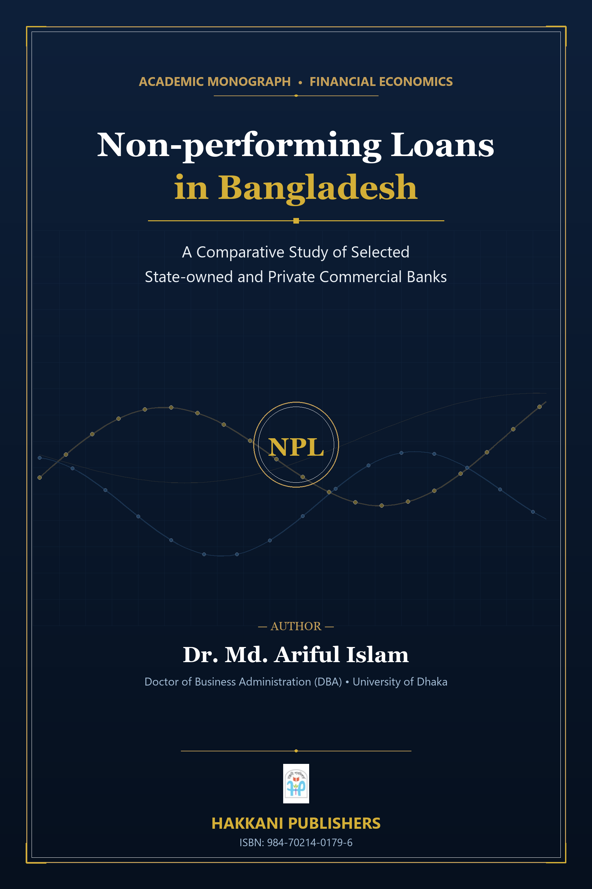

Non-performing loans (NPLs) represent one of the most critical structural challenges confronting the banking system and broader macroeconomic stability in Bangladesh. Piling up to almost Tk. 943 billion by 2019 and surging past Tk. 1,033 billion following the COVID-19 pandemic, loan defaults severely impair credit expansion, bank profitability, and capital adequacy.
This volume conducts a rigorous empirical investigation into the root determinants of asset quality deterioration, combining extensive primary questionnaire surveys across banking professionals and borrowers with advanced econometrics (including Arellano-Bond Generalized Method of Moments dynamic panel specifications and Im-Pesaran-Shin panel unit root tests).